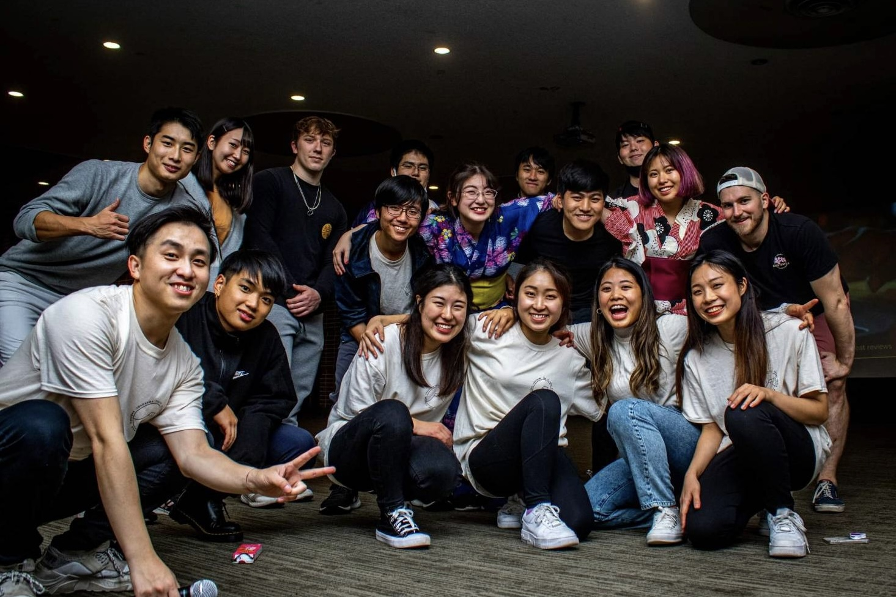
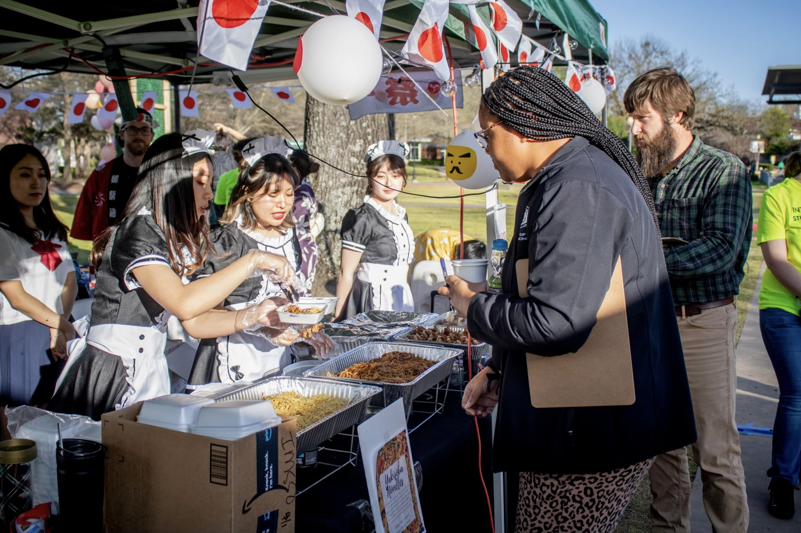
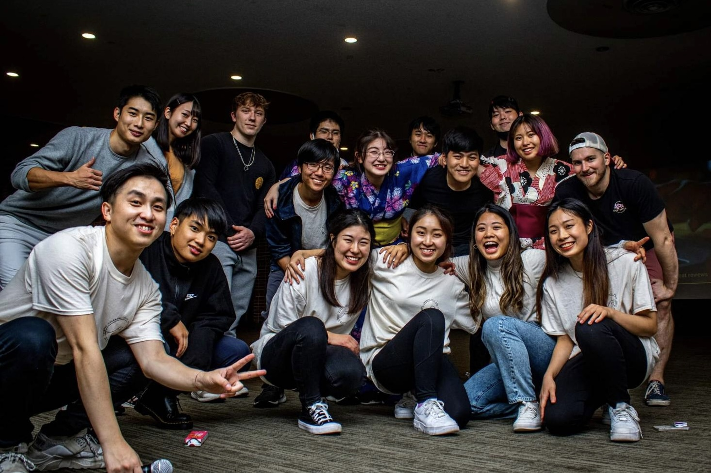
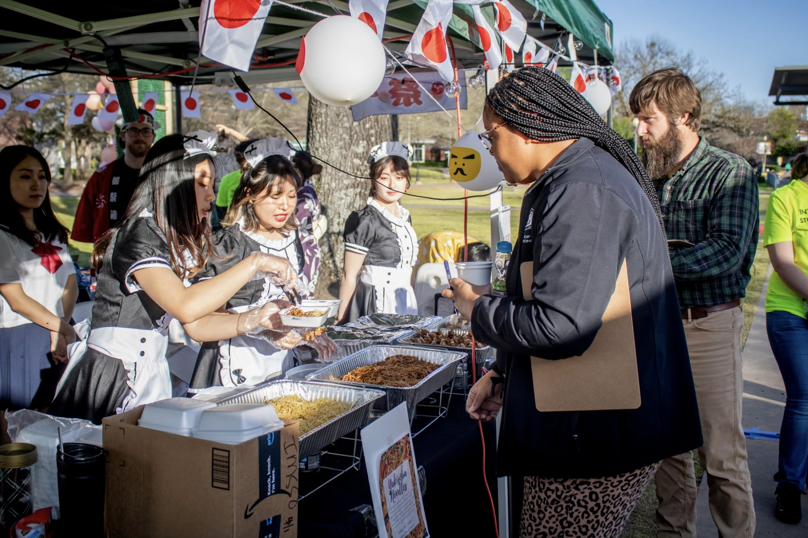
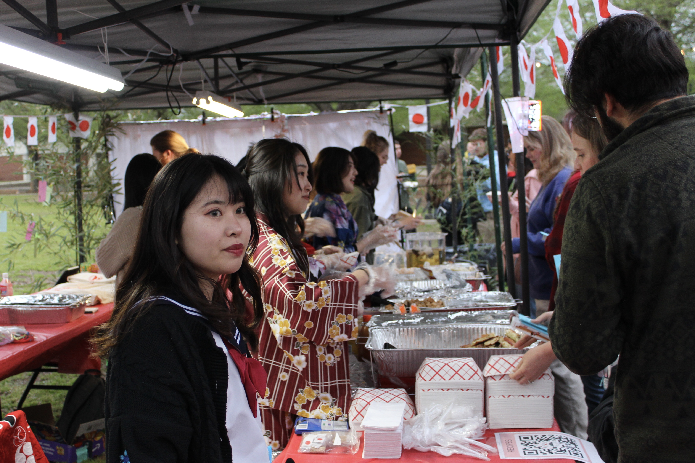
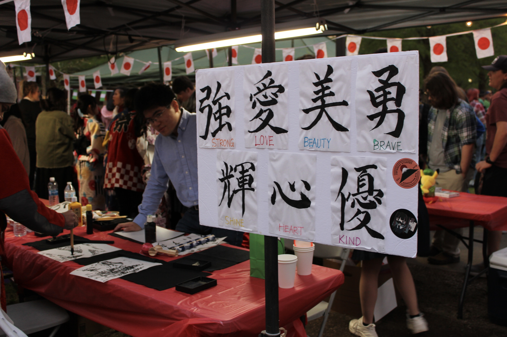
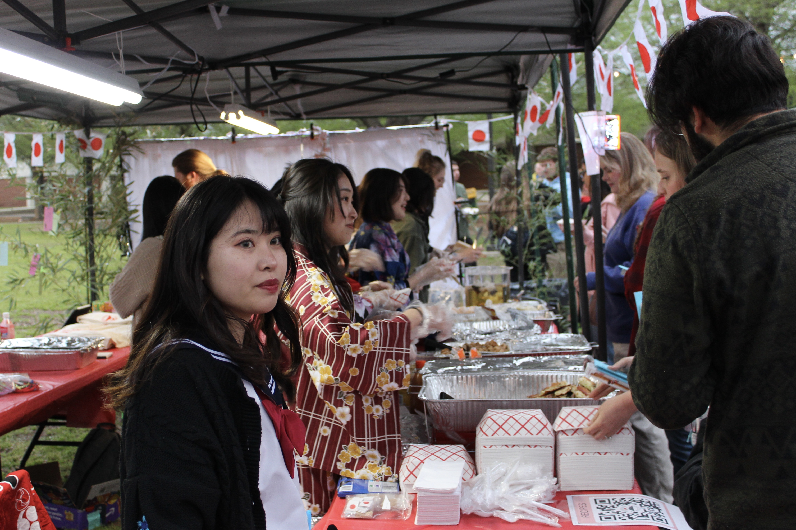
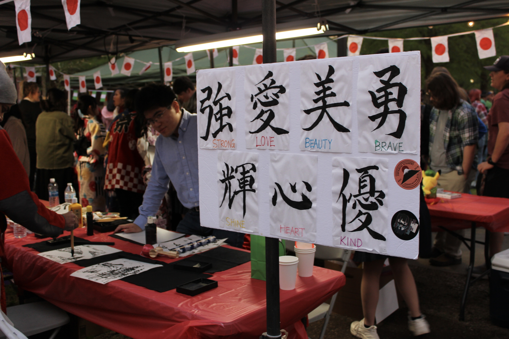

Welcome to
Japanese Student Association
at Arkansas Tech University!
 



 





About Us
The Japanese Student Association (JSA) is a community of Japanese students at ATU and all students who share an interest in Japanese culture. The JSA provides a platform for students to connect, share their experiences, and engage in various cultural activities such as language exchange activities, traditional events, and Japan Night. The association aims to promote cross-cultural understanding and create a welcoming environment for Japanese students while introducing Japanese culture to the wider student community. Through its activities and events, JSA hopes to build lasting connections and foster a sense of community among its members.
About Japan
Japan is a country located in East Asia, known for its unique blend of ancient traditions and modern technology. It is home to bustling cities like Tokyo, Kyoto, and Osaka, as well as picturesque rural areas with stunning natural scenery.
Visitors to Japan can experience a wide range of cultural activities, such as tea ceremonies, sumo wrestling, and traditional festivals like the famous cherry blossom festival. Japan is also famous for its delicious cuisine, which includes sushi, ramen, and many other delicious dishes.
Whether you're interested in history, technology, or simply soaking up the unique atmosphere of this incredible country, Japan is a destination that will not disappoint.